In dem Register "Optionen" kann u.a. eingestellt werden, welche Informationen während des Belegerfassens zusätzlich zur Verfügung stehen sollen. Alle Einstellungen werden hierbei benutzerspezifisch gespeichert!
Hinweis
Weitere Informationen bezüglich des Erfassens von Belegen und den Buttons des Programms "Belegerfassen" sind dem Kapitel Belegerfassen zu entnehmen.
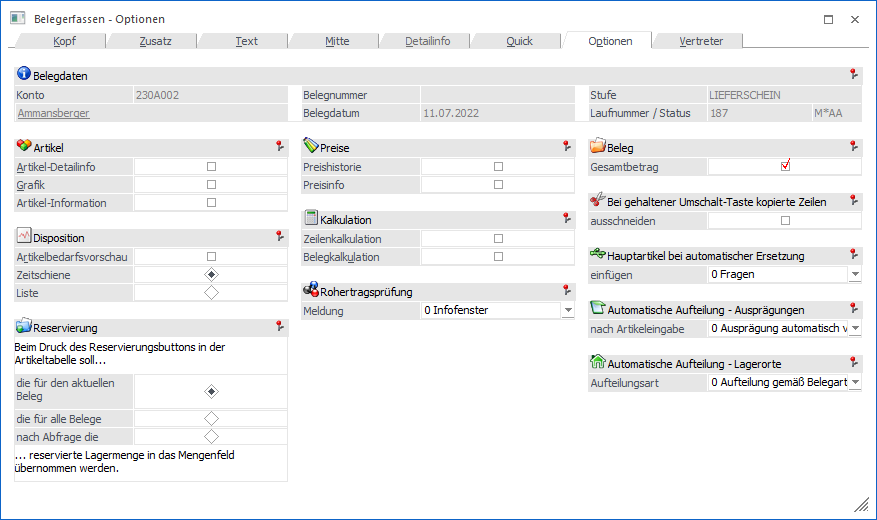
Folgende Eingabefelder, Einstellungen und Information stehen zur Verfügung:
Belegdaten
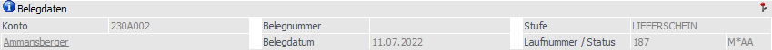
Ø Konto
An dieser Stelle wird die Nummer des Hauptkontos (WinLine START - Parameter - FAKT-Parameter - Belege - Allgemein - Option "Hauptkonto für Belege") des aktuellen Belegs angezeigt.
Ø Name
An dieser Stelle wird der Kontoname der Kontonummer dargestellt und das Fenster Kontoinformation kann direkt geöffnet werden.
Ø Belegnummer
An dieser Stelle wird die Belegnummer des Belegs angezeigt.
Ø Belegdatum
Hier wird das Belegdatum des Belegs dargestellt.
Ø Stufe
An dieser Stelle wird die Belegstufe des Belegs angezeigt. Wird ein Beleg in eine nachfolgende Belegstufe gewandelt, so wird hier die "Zielbelegstufe" dargestellt, die Laufnummer stammt hingegen noch vom "Ausgangsbeleg".
Ø Laufnummer/Status
Hier wird die Laufnummer, sowie der Staus des Beleges und dessen Folgestufen angezeigt.
Artikel
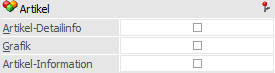
In diesem Bereich kann definiert werden, welche zusätzlichen Artikelinformationen (in separaten Fenstern) dargestellt werden sollen.
Ø Artikel-Detailinfo
Dieses Info-Fenster zeigt die wichtigsten Lagerinformationen des Artikels in komprimierter Form an.
Ø Grafik
Ist im Artikelstamm (Register "Texte") im Feld "Grafikdatei" ein Bild hinterlegt, kann durch Aktivierung dieser Option die Grafik im Belegerfassen angezeigt werden.
Ø Artikel-Information
Durch Aktivieren der Option "Artikel-Information" wird analog zum gewählten Artikel eine Detailinfo des Artikels angezeigt.
Hinweis
In diesem Fenster können auch Mehrjahresvergleiche und Archiv-Dokumente, jeweils bezogen auf den aktuellen Artikel, dargestellt werden (nähere Informationen hierzu entnehmen Sie bitte dem WinLine FAKT1-Handbuch, Kapitel "Artikel Info").
Disposition
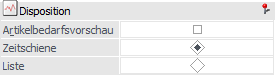
In diesem Bereich kann die Artikelbedarfsvorschau aktiviert und parametrisiert werden.
Ø Artikelbedarfsvorschau
Durch Aktivierung der Option "Artikelbedarfsvorschau" wird die Artikelbedarfsvorschau aufgerufen und mit den Daten zum jeweiligen Artikel gefüllt. Über die Auswahl "Zeitschiene" oder "Liste" kann dabei die Art der Bedarfsvorschau definiert werden.
Reservierung
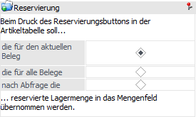
Ø Reservierungen
Diese Option steht nur bei Kundenlieferscheinen bzw. Kundenfakturen zur Verfügung, wenn diese bereits in der Stufe "2 - Auftrag" bearbeitet wurden und Artikel mit Reservierungskennzeichen enthalten. (kann in den FAKT-Parametern hinterlegt werden)
Beim Druck des Kundenlieferscheines bzw. der Kundenfaktura wird geprüft, ob die Liefermenge reserviert ist. Ist dies nicht der Fall so kann durch einen Mausklick auf das Reservierungskennzeichen in der Artikelzeile die Reservierungsmenge übernommen werden. Welche dies ist, kann an dieser Stelle definiert werden.
ü die für den aktuellen Beleg
Es
wird die Menge, die für den Beleg vom Lager reserviert wurde, automatisch in die
Artikelzeile übernommen. Dadurch kann diese Zeile geliefert werden und das rote
X (Reservierungskennzeichen) verschwindet.
ü die für alle Belege
Es wird die
gesamte Lagermenge (also auch die Lagermenge, die für andere Kundenaufträge
reserviert wurde), in die Artikelzeile übernommen. Falls andere Aufträge davon
betroffen sind, wird das Reservierungsfenster geöffnet und die Lagermenge muss
so editiert werden, dass die gesamte Menge für diesen Auftrag verwendet
wird.
ü nach Abfrage die
Beim Drücken
des Reservierungskennzeichens kommt die Abfrage ob die Menge des aktuellen
Beleges oder die aller Belege übernommen werden soll. D.h. es kann pro
Artikelzeile entschieden werden, bei den vorherigen Optionen gilt dies immer für
den gesamten Beleg.
Preise
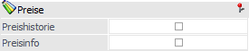
Ø Preishistorie
Bei Aktivieren dieser Checkbox wird die Preisentwicklung bei dem aktuell angewählten Artikel aufgrund der Informationen des Artikeljournals angezeigt. So ist sofort nachvollziehbar, wann welcher Artikel in welcher Menge um welchen Preis verkauft wurde (oder im Einkauf eingekauft wurde).
Ø Preisinfo
Durch Aktivierung dieser Option wird das Fenster "Preisinformation" automatisch für den im Fokus liegenden Artikel geöffnet und dessen Preise dargestellt.
Kalkulation
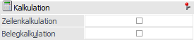
Ø Zeilenkalkulation
Durch Aktivieren der Option "Zeilenkalkulation" kann eine Zeilenkalkulation durchgeführt werden.
Ø Belegkalkulation
Durch Aktivieren der Option "Belegkalkulation" kann der gesamte Rohertrag des Beleges kalkuliert werden, wobei eine Änderung immer nur beim Summenrabatt berücksichtigt wird.
Rohertragsprüfung
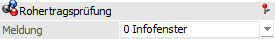
Ø Meldung
An dieser Stelle kann der Meldungstyp für die Rohertragsprüfung definiert werden. Folgende Einstellungen stehen zur Verfügung:
ü 0 - Infofenster
Bei einer
Rohertragsunterschreitung wird das Fenster "Rohertragsprüfung" angezeigt. Wenn
die Zeile gewechselt wird, dann werden die Informationen der Vorzeile
angezeigt.
Hinweis
Wenn bei der nachfolgenden Erfassungszeile der Rohertrag nicht geprüft werden soll bzw. der Rohertrag nicht unterschritten wird, dann schließt sich das Fenster in der Folge automatisch.
ü 1 - Meldung
Bei einer
Rohertragsunterschreitung wird eine entsprechende Meldung ausgegeben.
ü 2 - Meldung + Infofenster
Bei
einer Rohertragsunterschreitung wird das Fenster "Rohertragsprüfung" angezeigt
und eine entsprechende Meldung ausgegeben. Wenn die Zeile gewechselt wird, dann
werden die Informationen der Vorzeile angezeigt.
Hinweis
Wenn bei der nachfolgenden Erfassungszeile der Rohertrag nicht geprüft werden soll bzw. der Rohertrag nicht unterschritten wird, dann schließt sich das Fenster in der Folge automatisch.
ü 3 - Infofenster bei allen
Artikeln
Das Fenster "Rohertragsprüfung" wird in jeder Belegzeile angezeigt
und stellt die Informationen der aktuellen Zeile da.
Wenn bei einem Artikel
die Voraussetzungen für eine Rohertragsprüfung erfüllt sind und eine
Rohertragsunterschreitung stattfindet, dann wird auf diese entsprechend
hingewiesen.
Beleg
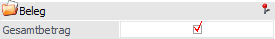
Ø Gesamtbetrag
Durch Aktivierung dieser Option werden im Register "Mitte" die mitlaufenden Informationsfelder "Gesamtnettobetrag" und "Gesamtbruttobetrag" angezeigt.
Bei gehaltener Umschalt-Taste kopierte Zeilen
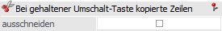
Ø Bei gehaltener Umschalt-Taste kopierte Zeilen ausschneiden
Wenn bei Betätigung des Tabellenbuttons "Belegzeilen einfügen" (Register "Mitte") die Umschalt-Taste gedrückt wird, so erfolgt keine Kopie des Artikels, sondern ein Verschieben, wenn diese Option aktiviert wurde.
Hauptartikel bei automatischer Ersetzung
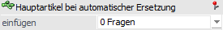
Ø Hauptartikel bei automatischer Ersetzung einfügen
Mit dieser Option kann bei der Erfassung eines Zwischenartikels der entsprechende Hauptartikel bei Rechnen bzw. Drucken des Belegs automatisch in die Belegmitte eingefügt werden. Folgende Einstellungen stehen dabei zur Verfügung:
ü 0 - Fragen
Es wird bei jeder
Erfassung eines Zwischenartikels gefragt, ob der Hauptartikel eingefügt werden
soll.
ü 1 - Nie
Es wird nie automatisch
der Hauptartikel zum Zwischenartikel eingefügt.
ü 2 - Immer
Es wird immer
automatisch der Hauptartikel zum Zwischenartikel eingefügt.
Hinweis
Zwischenartikel sind Ausprägungsartikel die weiter ausgeprägt werden können, z.B. ein Hauptartikel (Artikelnummer "10030") der mit Größenausprägungen (Ausprägungskürzel "M") und Chargennummer geführt wird. Der Artikel "10030,M" ist in diesem Fall der sogenannte Zwischenartikel.
Automatische Aufteilung - Ausprägungen
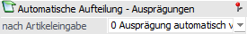
Ø nach Artikeleingabe
Durch das Hinterlegen einer Ausprägung im Register Zusatz kann eine automatische Aufteilung auf Ausprägungen während der Belegerfassung stattfinden. Das genaue Aufteilungsverhalten kann an dieser Stelle definiert werden, wobei folgende Varianten zur Verfügung stehen:
ü 0 - Ausprägungen automatisch
vervollständigen
Ist im Register Zusatz eine Ausprägung hinterlegt und
wird in der Belegmitte der Hauptartikel eingegeben, so wird dieser - falls
vorhanden - automatisch durch die entsprechende Ausprägung ersetzt.
ü 1 - Aufteilungsfenster
öffnen
Wenn eine Ausprägung im Register Zusatz hinterlegt ist und in der
Belegmitte der Hauptartikel eingegeben wird, dann wird - auch wenn eine
entsprechende Ausprägung vorhanden ist - immer das Aufteilungsfenster geöffnet.
Die im Register "Zusatz" hinterlegte Ausprägung wird in diesem Fall
ignoriert.
ü 1 - Aufteilungsfenster öffnen
(Ausprägungen übernehmen
Ist im Register Zusatz eine Ausprägung angegeben und
wird in der Belegmitte der Hauptartikel eingegeben, dann wird - auch wenn eine
entsprechende Ausprägung vorhanden ist - immer das Aufteilungsfenster geöffnet.
Dabei wird die im Register "Zusatz" hinterlegte Ausprägung als Vorbelegung in
das Aufteilungsfenster übernommen.
Automatische Aufteilung - Lagerorte
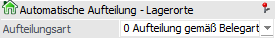
Ø Aufteilungsart
Mit Hilfe der automatischen Lagerortaufteilung wählt die WinLine automatisiert Lagerorte aus, so dass eine Eingabe im Fenster Lagerorte erfassen nicht mehr notwendig wäre. An dieser Stelle kann die Herkunft des Lagerorts definiert werden:
ü 0 - Aufteilung gemäß
Belegart
Eine automatische Lagerortaufteilung findet auf jenen Ort bzw.
Bereich statt, welcher im Register Zusatz hinterlegt wurde. Alle dem
Artikel zugewiesenen Standardlagerorte werden hierbei ignoriert.
ü 1 - Aufteilung gemacht
Artikelstamm/Belegart
Bei der automatischen Lagerortaufteilung wird zunächst
der Standardlagerort des Artikels berücksichtigt. Nur wenn dieser nicht
angegeben bzw. die Voraussetzung hierfür nicht erfüllt wurden, wird jener Ort
bzw. Bereich verwendet, welcher im Register Zusatz hinterlegt wurde.
Hinweis
Eine detaillierte Beschreibung der Voraussetzungen bzw. Arbeitsabläufe kann dem Kapitel Belegerfassung - Register "Mitte" - Automatische Lagerortaufteilung entnommen werden.